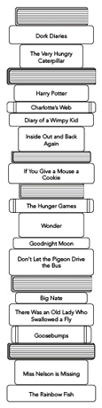
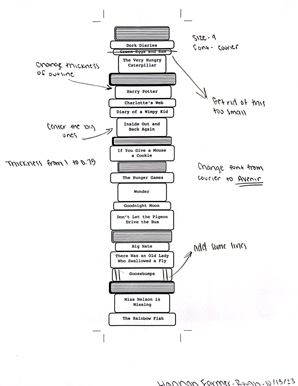

Bookmark Project |
||
| Home - Video Project - Bookmark Project - Inforgraphic Project | ||
|
Purpose: To design, print, and finish a custom bookmark for Pequea Elementary School Library |
|
 |

Process: Initially, I generated five thumbnail sketches featuring various bookmark concepts on paper. Afterward, I chose one from the selection and elaborated on it in more detail, including the specific book covers I intended to incorporate of popular books elementary students like to read. Using InDesign, I constructed the complete bookmark by utilizing the shape tool to craft rounded rectangles of varying lengths and widths, and I added the page lines using the line tool. Subsequently, I included text on each forward-facing book cover. I left a lot of white space as I wanted the kids to be able to color each book in order to personalize it to their liking. the last step was, after creating the first design of the bookmark I printed it to see what it looks like on paper. I then changed some things around to enhance the over all look of the bookmark (image above). |
|
© 2023 Hannah R. Farmer |
||